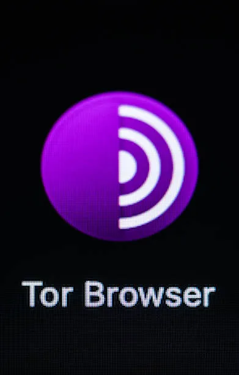

What Is Dark Web?
Uses of Dark Web
- The dark web is accessed for privacy and anonymous communication. Tor technology was originally developed with U.S. Naval Research Laboratory involvement. It can also help journalists, activists and others communicate more privately.
- However, some people misuse the dark web for activities such as cybercrime, illegal drug trading, hiring hitmen and stealing passwords or bank details.
Risks and Dangers
Dark web is a part of internet that cannot be accessed directly with ordinary search engines like Brave, Chrome or Safari. A special browser called Tor Browser is used for it. The websites we use daily such as YouTube and Pinterest are included in the part of internet called the surface web. Basically, the surface web is the tip of the iceberg. Then comes deep web, which contains password-protected databases such as private emails and online banking. Then comes the dark web, the bottom of the iceberg. It is associated with lots of underground activities.
| Part of the Internet | Examples | Uses |
|---|---|---|
| Surface Web | YouTube, Google, Wikipedia | Watching videos, searching for information, and browsing websites. |
| Deep Web | Private emails, online banking, password-protected databases | Accessing private accounts and storing confidential information. |
| Dark Web | Tor-hosted websites, anonymous forums, hidden services | Anonymous communication, privacy protection, and sometimes illegal activities. |
To know more about the dark web, surface web and deep web: Dark Web by Fing

If you access the dark web without prior safety knowledge, you may be exposed to scams designed to hack your system and steal personal information. Malware, Trojans and viruses are potential risks. Disturbing and illegal content may also be encountered. Accessing or engaging with certain illegal material or activities could lead to legal trouble. Anonymity is not guaranteed on the dark web. This video is a suitable example of the dangers of the dark web: Secret Military Info of UK leaked on Dark Web